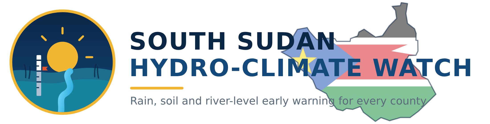
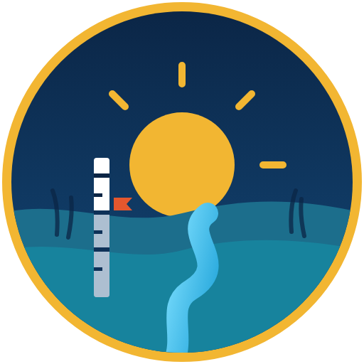

Half of these work without a smartphone: SMS alerts and gauge texts reach basic phones; pictures and recorded Dinka reach members who don't read; Bluetooth sync carries records out of places with no signal. The rest close the money loop: store, payout, traceable bottles. All live under Home › Field tools in 1a.
Try next: "send the payout list as mobile money" · "add an Arabic SMS preview" · "make pictures & voice the default for Group 6"
The admin creates each user, picks a role and an expiry, and the app generates a random access key. The key is shown once for the admin to hand over. GitHub keeps only a salted hash in a private repository, so even someone who reads the repo cannot sign in. Revoking a user is one commit; every phone picks it up at its next sync.
Try next: "print the key as a QR card for workers" · "add per‑role permissions (who can see sales)" · "show what happens when a key expires offline"
Yes, both work. Your altimetry-nightly workflow already refreshes DAHITI/Hydroweb water levels and Earth Engine climate every night at 00:00 Cairo into the colab_waterlevel Drive folder; the app reads those files directly. When the phone has signal it pulls only changed files, clipped to the 40 ha boundary so they stay small, and the flood model re-runs on the cached set. Crop checks go the other way: saved on the phone, then appended to a Drive sheet the extension team already reads.
Try next: "build idea i and iii" · "add a supervisor view summarising crop checks by extension worker" · "put the crop check on 1a's home"


App iconOne offline‑first app for the 160 farmers working 40 ha of Balanites, Moringa and native crops in Duk County. Farm operations lead the navigation; the species guide and cooperative market sit beside them. Every phone below is fully clickable. Tap tasks, drag the flood slider, map a plot, log a harvest, toggle online/offline and EN / عربي / DIN in the header.
Same app and data; only the first screen changes.
Each opens on a different screen and stays interactive.
Try next: "go with 1a but add the season band from 1b" · "add a group‑lead roll‑call screen" · "show the Arabic screens right‑to‑left"